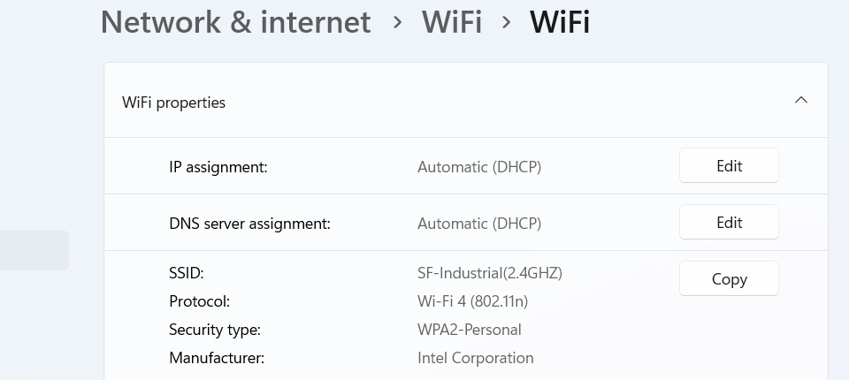

متى نعملها
نختاره عند حماية الشبكة اللاسلكية في المكتب أو البيت. هذا هو المعيار القوي الشائع.
تقنية 13 من 15
نختاره عند حماية الشبكة اللاسلكية في المكتب أو البيت. هذا هو المعيار القوي الشائع.
وظيفته تشفير الشبكة اللاسلكية بمعيار التشفير المتقدم (Advanced Encryption Standard - AES). يضعف إذا كانت كلمة المرور ضعيفة، أو بسبب ثغرات نقطة الوصول المجاورة (Neighboring Access Point).
من صفحة الموجّه (Router) نختار الوصول المحمي للواي فاي الجيل الثاني (Wi-Fi Protected Access 2 - WPA2)، ونوع التشفير معيار التشفير المتقدم (Advanced Encryption Standard - AES)، ونضع كلمة مرور طويلة.
